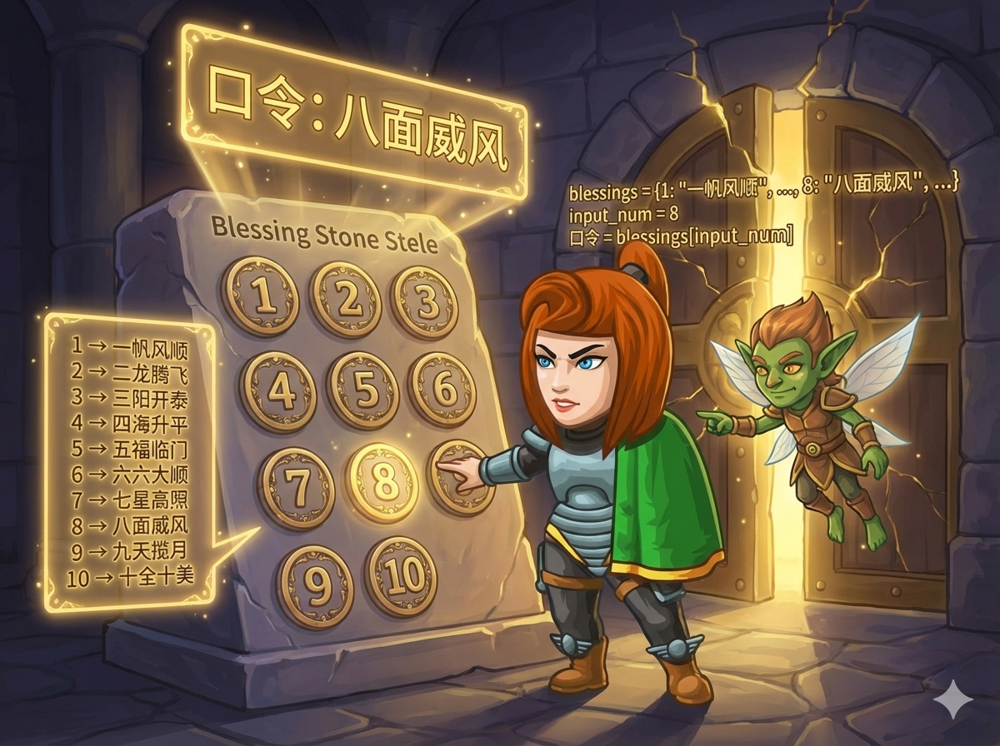

你站在地牢的宝库门前，石碑上有 10 个数字按钮 (1~10)。 守门小精灵告诉你，每个数字都对应一句“祝福成语”。 只要输入数字，程序就要自动把对应的成语“翻译”出来，宝库大门就会打开！
📜 对应规则：
1 → 一帆风顺 | 2 → 二龙腾飞 | 3 → 三阳开泰 ... 10 → 十全十美

当我们需要根据一个整数（如 1, 2, 3...）来决定执行哪段代码时，switch 语句比写 10 个 if 更清晰、更高效。
⚠️ 注意： 每个 case 后面都要记得写 break;，否则会“漏”到下一层去！
我们可以把 10 个成语存到一个 字符串数组 里。
数组的下标是从 0 开始的，为了让下标直接对应 1~10，我们可以：
✅ 定义数组大小为 11，把下标 0 的位置空着（或者填个空字符串），这样下标 1 就对应第 1 个成语，下标 10 就对应第 10 个成语。
这种方法代码极短，被称为“查表法”。
Python 的字典 (Dict) 是处理“对应关系”的神器。它就像一本真正的字典：
🔑 键 (Key)： 数字 (如 1, 2)
💎 值 (Value)： 成语 (如 "一帆风顺")
我们可以直接通过 字典名[数字] 瞬间找到答案，不需要逐个判断。
列表也可以用来查表。但列表的索引是从 0 开始的 (0, 1, 2...)。
为了让输入 1 能取到第一个成语，我们通常会在列表的最前面加一个“占位符”（比如空字符串 ""）。
这样：列表[1] 就是 "一帆风顺"，列表[10] 就是 "十全十美"。
这种方法逻辑清晰，适合初学者掌握分支结构。
#include <iostream> using namespace std; int main() { int n; cin >> n; // 读入数字按钮 switch (n) { case 1: cout << "一帆风顺"; break; // 记得 break! case 2: cout << "二龙腾飞"; break; case 3: cout << "三阳开泰"; break; case 4: cout << "四海升平"; break; case 5: cout << "五福临门"; break; case 6: cout << "六六大顺"; break; case 7: cout << "七星高照"; break; case 8: cout << "八面威风"; break; case 9: cout << "九天揽月"; break; case 10: cout << "十全十美"; break; } return 0; }
定义一个数组，把成语按顺序放进去，直接用下标访问。
#include <iostream> using namespace std; int main() { int n; cin >> n; // 定义一个字符串数组，大小为11 // 第0个元素放空字符串，这样下标1就对应"一帆风顺" string arr[11] = { "", "一帆风顺", "二龙腾飞", "三阳开泰", "四海升平", "五福临门", "六六大顺", "七星高照", "八面威风", "九天揽月", "十全十美" }; // 直接输出对应下标的字符串 cout << arr[n]; return 0; }
使用字典 (Dictionary) 建立数字到字符串的映射，清晰直观。
# 1. 读入数字 n = int(input()) # 2. 定义字典：{数字: "成语"} bless = { 1: "一帆风顺", 2: "二龙腾飞", 3: "三阳开泰", 4: "四海升平", 5: "五福临门", 6: "六六大顺", 7: "七星高照", 8: "八面威风", 9: "九天揽月", 10: "十全十美" } # 3. 直接通过键(Key)查找值(Value) print(bless[n])
使用列表 (List)，注意需要在最前面加一个占位符，以对齐下标。
# 1. 读入数字 n = int(input()) # 2. 定义列表，第0个元素放空字符串 arr = [ "", "一帆风顺", "二龙腾飞", "三阳开泰", "四海升平", "五福临门", "六六大顺", "七星高照", "八面威风", "九天揽月", "十全十美" ] # 3. 通过索引访问 print(arr[n])